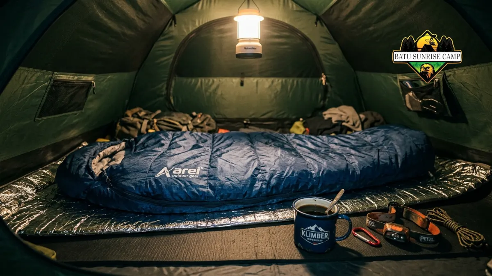

Cara bisa tidur di tenda dengan nyenyak intinya ada pada tiga hal: matras dan sleeping bag yang sesuai suhu, tenda yang dipasang di lokasi datar dan terlindung angin, serta rutinitas tubuh yang tenang sebelum tidur.
Tidur di tenda sering terasa berbeda dari tidur di kasur rumah karena tubuh harus beradaptasi dengan suhu udara terbuka, permukaan tanah yang tidak rata, serta suara-suara alam yang asing bagi sebagian orang.
Menurut pengalaman umum para pendaki, malam pertama berkemah biasanya menjadi malam paling sulit karena tubuh belum terbiasa dengan lingkungan baru, dan kondisi ini biasanya membaik pada malam kedua setelah tubuh mulai beradaptasi.
Artikel ini membahas secara menyeluruh cara bisa tidur di tenda, mulai dari persiapan sebelum berangkat, pemilihan lokasi, perlengkapan yang dibutuhkan, hingga kesalahan umum yang sebaiknya dihindari agar kualitas tidur saat camping tetap terjaga.
Mengapa Sulit Tidur di Tenda?
Sulit tidur di tenda umumnya disebabkan oleh suhu dingin, permukaan tidur yang keras, dan suasana yang belum familiar bagi tubuh. Ketiga faktor ini saling berkaitan dan bisa diatasi dengan persiapan yang tepat.
Beberapa penyebab umum meliputi:
- Suhu udara yang berubah drastis di malam hari, terutama di area pegunungan atau dataran tinggi.
- Permukaan tanah yang tidak rata atau keras, sehingga tubuh sulit rileks sepenuhnya.
- Kelembapan udara yang membuat sleeping bag terasa lembap jika tidak dilapisi dengan benar.
- Suara alam yang asing, seperti suara angin, serangga, atau hewan malam.
- Kecemasan ringan karena berada di lingkungan terbuka yang tidak sepenuhnya familiar.
Memahami penyebab ini penting karena solusi untuk tidur nyenyak di tenda sebenarnya menyasar langsung ke akar masalah tersebut, bukan sekadar menambah jumlah selimut atau jaket.
Apa Perlengkapan yang Wajib Dibawa agar Bisa Tidur Nyenyak di Tenda?
Perlengkapan wajib untuk tidur nyenyak di tenda meliputi sleeping bag sesuai suhu lokasi, matras berinsulasi, bantal portable, dan pakaian tidur berlapis yang menjaga kehangatan tubuh sepanjang malam.
Berikut rincian perlengkapan yang sebaiknya disiapkan:
- Sleeping bag — pilih sesuai rating suhu lokasi tujuan; sleeping bag musim panas tidak cocok dipakai di area pegunungan yang dingin.
- Matras tidur (sleeping pad) — berfungsi sebagai penahan hawa dingin dari tanah, bukan sekadar bantalan empuk. Tanpa matras, panas tubuh akan hilang lebih cepat ke permukaan tanah meski sleeping bag sudah tebal.
- Bantal portable atau bantal tiup — membantu posisi leher tetap nyaman sepanjang malam.
- Pakaian tidur kering dan berlapis — hindari memakai pakaian yang sama dengan pakaian aktivitas siang hari karena biasanya sudah lembap oleh keringat.
- Kaus kaki tebal dan penutup kepala tipis — kaki dan kepala adalah area yang cepat kehilangan panas tubuh.
- Penyumbat telinga dan penutup mata — berguna jika sensitif terhadap suara dan cahaya di area camping ramai.
Melengkapi perlengkapan ini secara umum dapat membuat tubuh lebih cepat merasa hangat dan nyaman, sehingga proses tidur menjadi lebih mudah dibandingkan hanya mengandalkan sleeping bag saja.
Bagaimana Cara Memilih Lokasi Tenda yang Mendukung Tidur Nyenyak?
Lokasi tenda yang mendukung tidur nyenyak adalah area yang datar, kering, sedikit terlindung dari angin langsung, dan tidak berada di jalur air atau cekungan yang berpotensi tergenang.
Beberapa panduan pemilihan lokasi:
- Hindari mendirikan tenda di cekungan tanah, karena udara dingin cenderung berkumpul di area rendah pada malam hari.
- Pilih area dengan sedikit pelindung alami, seperti di dekat bebatuan besar atau vegetasi rendah, untuk mengurangi terpaan angin langsung.
- Pastikan tanah rata dan bebas dari bebatuan atau akar yang bisa mengganggu kenyamanan saat berbaring.
- Perhatikan arah pintu tenda agar tidak langsung menghadap arah angin dominan.
- Jauhi area yang berpotensi menjadi jalur air saat hujan turun, seperti dasar lembah kecil.
Pemilihan lokasi yang tepat sering kali memberi pengaruh lebih besar terhadap kenyamanan tidur dibandingkan jumlah perlengkapan yang dibawa.

Perlengkapan tidur yang lengkap membantu menjaga kenyamanan dan kehangatan tubuh sepanjang malam.
Baca juga: Perlengkapan Wajib agar Bisa Tidur Nyenyak di Tenda
Bagaimana Cara Mengatur Suhu Tubuh Agar Tidak Kedinginan di Tenda?
Cara mengatur suhu tubuh di tenda adalah dengan berpakaian berlapis, menghindari pakaian basah, dan memanfaatkan lapisan matras tambahan di bawah tubuh untuk mencegah hawa dingin dari tanah.
Beberapa langkah praktis yang bisa diterapkan:
- Gunakan sistem pakaian berlapis (layering): lapisan dalam menyerap keringat, lapisan tengah menghangatkan, lapisan luar menahan angin.
- Ganti pakaian basah dengan pakaian kering sebelum tidur, karena pakaian lembap mempercepat hilangnya panas tubuh.
- Tambahkan matras kedua atau alas tambahan di area pinggul dan bahu jika suhu sangat dingin.
- Konsumsi minuman hangat sebelum tidur untuk membantu menstabilkan suhu tubuh secara alami.
- Hindari tidur dengan perut kosong maupun terlalu kenyang, karena keduanya dapat memengaruhi kenyamanan tidur.
Menjaga suhu tubuh tetap stabil menjadi kunci utama agar tidak sering terbangun akibat kedinginan di tengah malam.
Apa Kesalahan Umum yang Membuat Sulit Tidur di Tenda?
Kesalahan umum yang membuat sulit tidur di tenda antara lain tidak membawa matras berinsulasi, memilih lokasi tenda yang salah, dan tidur langsung setelah aktivitas fisik berat tanpa jeda relaksasi.
Beberapa kesalahan yang sering terjadi:
- Mengandalkan sleeping bag saja tanpa matras, sehingga hawa dingin dari tanah tetap terasa.
- Memasang tenda terburu-buru tanpa memeriksa kerataan dan kemiringan tanah.
- Membawa pakaian tidur yang sama dengan pakaian aktivitas, yang biasanya sudah lembap.
- Meninggalkan ventilasi tenda tertutup rapat, sehingga kelembapan di dalam tenda meningkat.
- Langsung tidur setelah aktivitas berat tanpa memberi waktu tubuh untuk tenang terlebih dahulu.
Menghindari kesalahan-kesalahan ini dapat secara signifikan meningkatkan kualitas tidur selama berkemah, terutama bagi pemula yang baru pertama kali mencoba tidur di alam terbuka.
Tips Tambahan agar Cepat Terlelap di Tenda
Beberapa tips tambahan yang dapat membantu tubuh lebih cepat terlelap di tenda meliputi rutinitas relaksasi sebelum tidur, pengaturan pencahayaan, dan penyesuaian posisi tidur terhadap kontur tanah.
- Lakukan peregangan ringan sebelum tidur untuk melemaskan otot setelah aktivitas mendaki atau berjalan.
- Redupkan cahaya headlamp secara bertahap agar mata mulai beradaptasi dengan gelap.
- Posisikan tubuh sedikit menghadap arah kemiringan tanah jika lokasi tidak sepenuhnya rata.
- Bawa penutup telinga apabila berkemah di area ramai atau dekat aliran sungai yang berisik.
- Tetapkan waktu tidur yang konsisten agar tubuh terbiasa dengan pola istirahat di alam terbuka.
Kesimpulan
Cara bisa tidur di tenda dengan nyaman bergantung pada kombinasi tiga hal utama: perlengkapan tidur yang sesuai suhu, pemilihan lokasi tenda yang tepat, dan kebiasaan tubuh yang tenang sebelum tidur.
Persiapan yang matang sebelum berangkat camping akan sangat menentukan kualitas istirahat selama berada di alam terbuka.